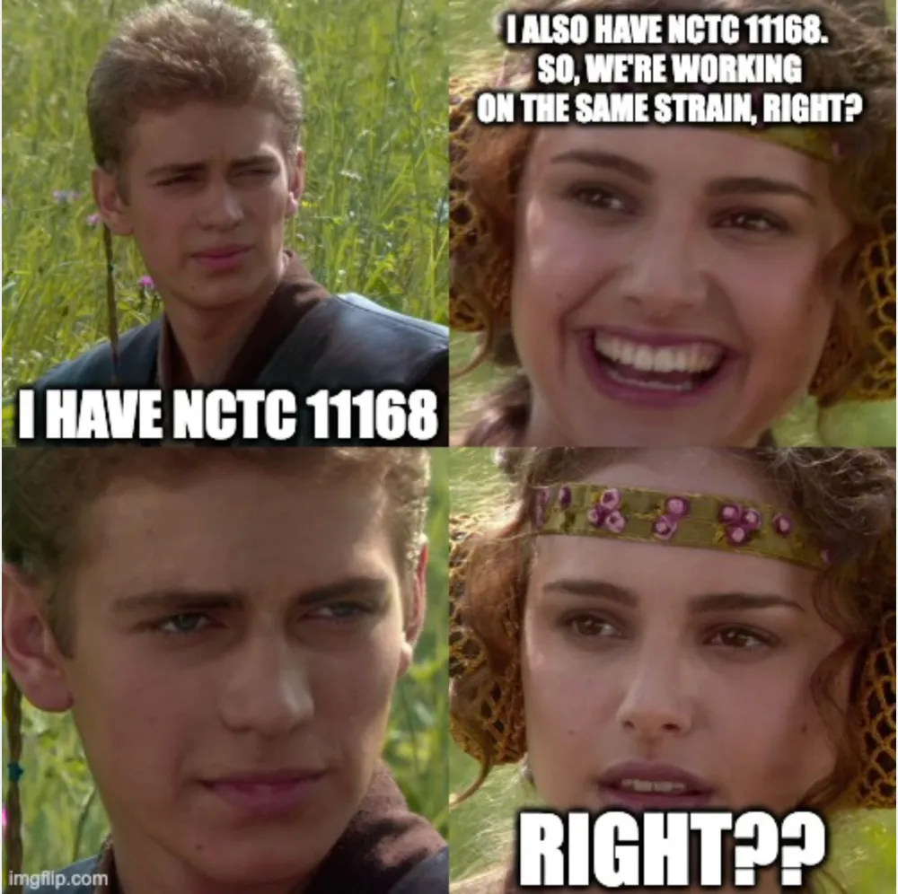

There are certain bacterial strains that everybody in a field knows.
For Campylobacter jejuni, one of them is NCTC 11168. It was deposited in the National Collection of Type Cultures in 1977 and later became the first Campylobacter strain to have its complete genome published. Since then it has been passed between laboratories around the world and used as a reference in countless experiments.
Which leads to an apparently reasonable exchange:

That was essentially the question behind a paper Lisa Williams and I co-led in 2019.
One strain, many freezers
Reference strains are one of the foundations of experimental microbiology. If laboratories in Swansea, Oxford, Sheffield or Glasgow all use NCTC 11168, we should be able to compare their results.
But there is an awkward biological detail: bacteria continue to evolve.
Freezing largely stops that process. Growing them does not. Every time a strain is revived, cultured, transferred, selected from a colony and frozen again there is an opportunity for variants to arise, disappear or become enriched. Even small genetic changes can matter if they alter traits such as antimicrobial resistance, motility or host interaction.
So we wondered what had happened to NCTC 11168 during four decades of life in laboratories.
We asked people to send us their 11168
We collected 23 laboratory stocks of NCTC 11168 from around the UK. Ten had been obtained directly from the NCTC collection; thirteen had reached the contributing laboratory via another lab.
What looked superficially like 23 copies of the same strain was therefore also a small historical experiment that had been running accidentally since 1977.
We sequenced them all.
First, the reassuring bit
They really were NCTC 11168. When placed in the context of broader C. jejuni diversity, all 23 clustered tightly within the host-generalist ST-21 lineage. There was no evidence that somebody had simply mixed up a freezer stock with an unrelated strain.
Zoom in, though, and the story changes.
In most cases the genetic differences were small: 21 of the 23 isolates had 32 or fewer SNP differences from the reference, with an average of 29. The closest comparison still differed by eight SNPs.
One stock was much more striking. Isolate 17, a Sheffield stock labelled WT-2000, sat on the long branch in panel b and differed from the reference by 281 substitutions. The detailed analyses also inferred recombination and loss of a block of genes involved in flagellar modification.
It was still NCTC 11168.
The name had remained fixed while the bacterium acquired its own laboratory history.
And they did not behave the same either
This would be an interesting genomic footnote if the differences stopped at DNA sequence. They did not.
The stocks differed in motility, morphology, growth, invasion of human and chicken cells and susceptibility to ampicillin. Some were non-motile, some motile and some hyper-motile. Among the 21 stocks tested for invasion, 14 invaded the chicken epithelial cell line more effectively than the human cell line. Two isolates were resistant to ampicillin under the criteria used in the study.
So two laboratories could write essentially the same sentence in their methods — Campylobacter jejuni NCTC 11168 was cultured... — and nevertheless be starting their experiments with bacteria that behave differently.
That matters.
“Domestication”
We called the paper Domestication of Campylobacter jejuni NCTC 11168.
Not because somebody deliberately bred a tame Campylobacter. The point was that a laboratory is itself an environment.
Traits that matter inside a chicken gut or a human host do not necessarily provide the same advantage on agar or in broth. Flagella, for example, are energetically expensive, and growth in laboratory media can favour loss of motility. Repeated passage creates opportunities for mutation, drift and selection.
We had unintentionally created multiple laboratory lineages of the same famous reference strain.
This was not really a criticism of reference strains
Quite the opposite.
NCTC 11168 has been enormously important precisely because it gave Campylobacter researchers something in common. Its genome became a coordinate system for the field. Work with this strain has helped researchers dissect motility, metabolism, capsule biology, oxidative stress, iron acquisition, host interaction and many other aspects of Campylobacter biology.
The point was simply that a strain name is not the whole provenance of an experiment.
Where did your stock come from? How has it been passaged? Was it derived from a single colony? And, increasingly cheaply: have you sequenced it?
Our conclusion was that laboratories should maintain good strain histories and consider routine sequencing of important reference stocks as sequencing becomes cheaper.
Seven years later, that recommendation feels considerably less extravagant.
There is a longer historical thread here
This was not our first encounter with a famous culture-collection strain.
A few years earlier, Guillaume Méric drove work on NCTC86, an Escherichia coli descended from one of the earliest surviving isolates associated with Theodor Escherich's work. That project connected genome sequencing with records stretching back to the origins of bacteriology.
NCTC86 asked: how much biological information can survive in a bacterial culture for more than a century?
NCTC 11168 asked almost the inverse question: how much can a bacterial culture change in only a few decades of ordinary laboratory use?
Both make the same point.
A culture collection does not just preserve bacteria. It preserves history.
The freezer has a phylogeny
Population genomicists are used to thinking about bacterial ancestry across countries, hosts and decades of natural transmission.
But sometimes evolution is happening on a much smaller scale: between two freezers, on either side of a corridor, in two laboratories that both have a tube labelled:
NCTC 11168.